아무 곳이나 클릭하거나 ESC를 누르면 닫힙니다
관리자·멘토·메딕이 한 행사 안에서 어떻게 함께 움직이는지를 화면 순서대로 보여 드립니다.
한 행사 안에서 관리자·멘토·메딕이 각자 다른 화면을 씁니다. 역할에 꼭 필요한 기능만 각 앱에 담아, 누구도 자기 일과 상관없는 화면을 헤매지 않게 했습니다.
화면만 봐도 “지금 뭘 해야 하는지”가 보이도록 만들었습니다. 할 일·공지·진행 현황이 한 화면에 모입니다.
맨 위 “처리할 일”이 모든 행사에서 해야 할 일을 한 줄씩 모아 줍니다. 그 아래로 진행 중인 행사, 준비/진행/완료 현황, 달력과 공지가 이어집니다.
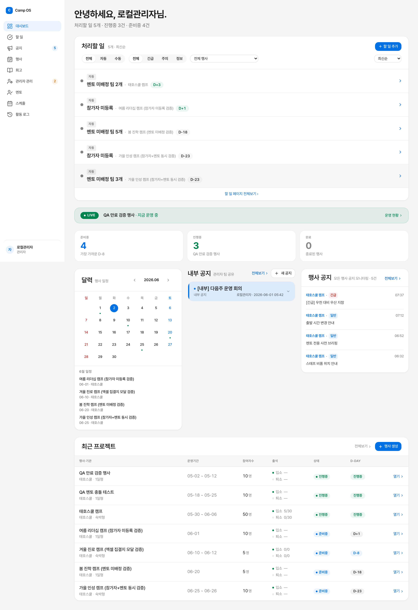
운영자의 출근 첫 화면. 여러 행사를 동시에 맡아도 해야 할 일과 진행 상황을 한눈에 파악합니다.
‘처리할 일’이 모든 할 일이 모이는 단 하나의 통로입니다. 할 일 페이지·행사 상세에서도 같은 목록을 그대로 봅니다.
초록 ‘LIVE’ 띠. 지금 운영 중인 행사명과 ‘운영 현황 →’이 떠, 누르면 그 행사로 바로 들어갑니다. 진행 중 행사가 여럿이면 가장 먼저 시작한 행사를 보여 줍니다.
회색 ‘D-N’ 띠. 진행 중 행사가 없으면, 시작이 가장 가까운 준비 중 행사를 D-day와 함께 띄웁니다.
비활성 띠. 진행 중·준비 중 행사가 모두 없으면 “예정된 행사가 없어요 · 행사 만들기”만 보입니다.
시스템이 스스로 찾아낸 일과 관리자가 직접 적은 일을 하나의 목록으로 합칩니다.
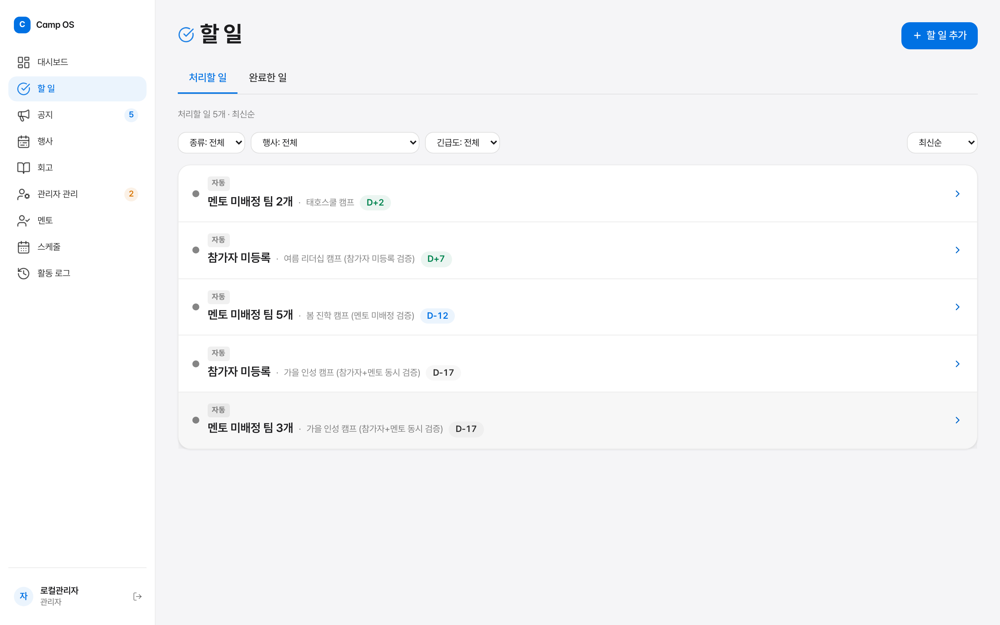
자동으로 감지된 일(참가자 미등록·멘토가 안 배정된 팀 등)과, 관리자가 손으로 추가한 일을 함께 관리합니다.
대시보드·할 일 페이지·행사 상세 어디서든 추가할 수 있습니다. 표준 체크리스트 항목은 실제 운영을 거치며 확정해 나갈 예정입니다.
관리자끼리 보는 ‘내부 공지’와, 현장(멘토·스태프)에 내려보내는 ‘행사 공지’를 분리했습니다.
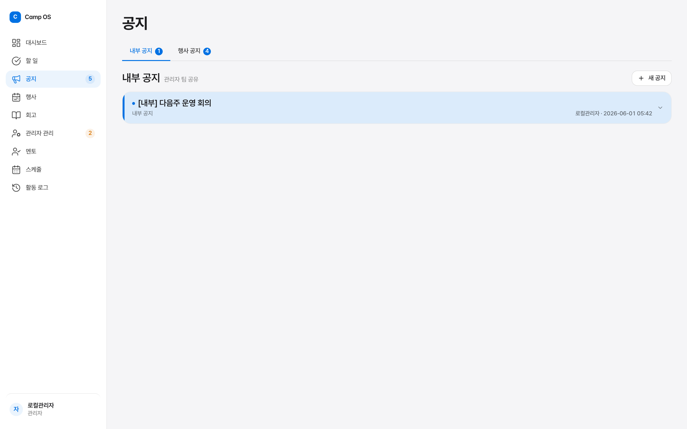
두 종류의 공지를 한 곳에서 작성·관리합니다. 행사 공지는 받을 대상(관리자/멘토/스태프)과 긴급도를 지정합니다.
공지는 관리자 → 현장으로 내려가는 단방향입니다. 반대로 현장이 올리는 통로는 ‘현장 보고’로 따로 두었습니다.
대부분의 작업은 ‘행사 하나’ 안에서 이뤄지지만, 좌측 메뉴의 멘토와 스케줄은 여러 행사를 한 번에 모아 봅니다. 같은 멘토가 이 행사 저 행사를 오가고, 일정도 행사별로 흩어져 있어서요.
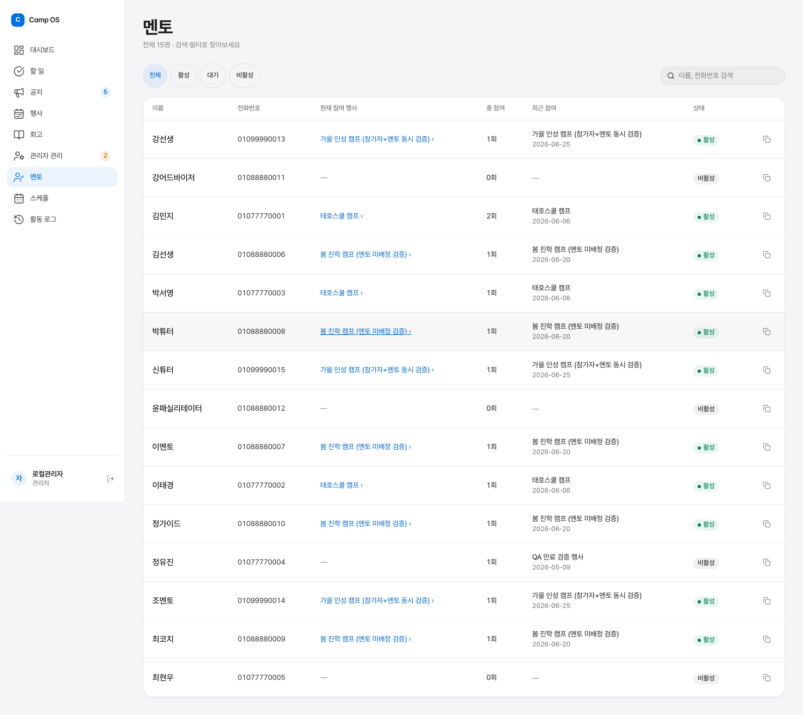
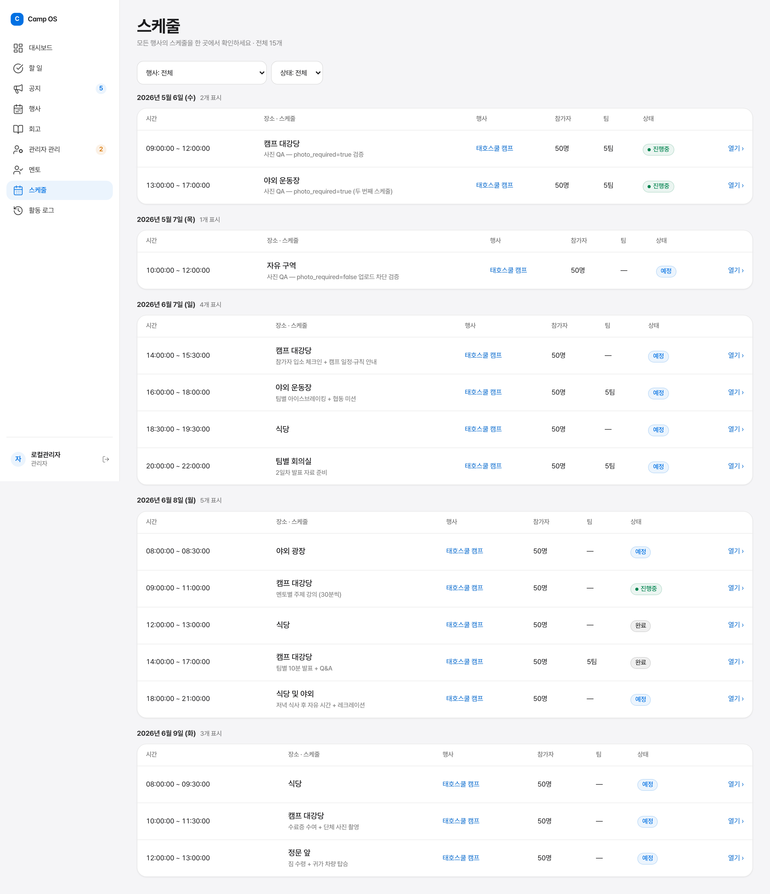
지금까지 등록된 모든 멘토를 한 명씩 봅니다. 각 멘토가 현재 어느 행사에 참여 중인지, 총 몇 번 참여했는지, 마지막이 언제였는지가 한 줄에 모입니다. 활성/대기/비활성으로 거르고 이름·전화로 검색해요.
모든 행사의 일정을 날짜별로 합쳐 봅니다. 행사·상태로 걸러 “오늘 어느 행사에서 무슨 일정이 도는지”를 한눈에 파악하고, 일정을 누르면 해당 행사 상세로 바로 들어갑니다.
행사 안의 화면이 ‘이 행사’에 집중한다면, 이 두 화면은 ‘행사들 사이’를 잇습니다. 멘토 한 명의 이력과 모든 일정을 행사 경계 없이 훑을 수 있게 따로 빼 두었습니다.
진행 중·준비 중·완료된 모든 행사를 한 곳에서 관리합니다. 여기서 행사 하나를 골라 들어가면 — 지금부터 그 행사의 일생을 따라가 봅니다.
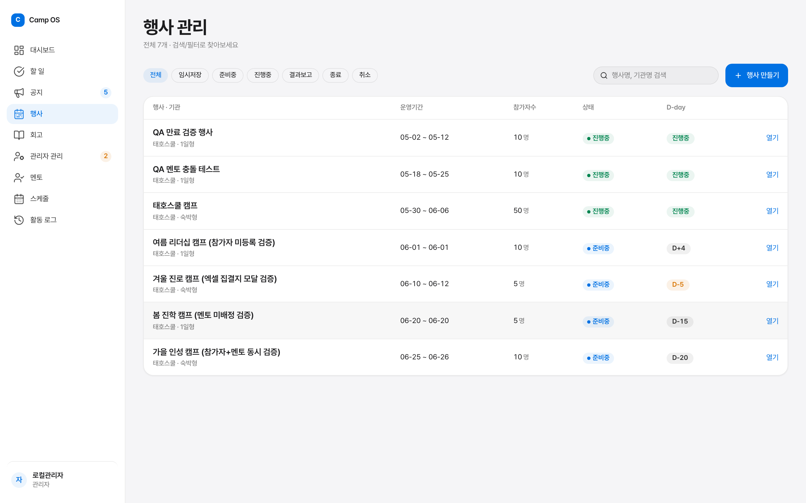
관리자1이 행사를 생성하고 → 참가자 명단을 올리고 → 팀을 나누고 → 스케줄을 등록합니다. 멘토·메딕이 들어오기 전, 관리자 혼자 준비하는 단계입니다.
필수 정보, 담당자, 출석체크 방식을 한 번에 설정해 행사를 만듭니다.
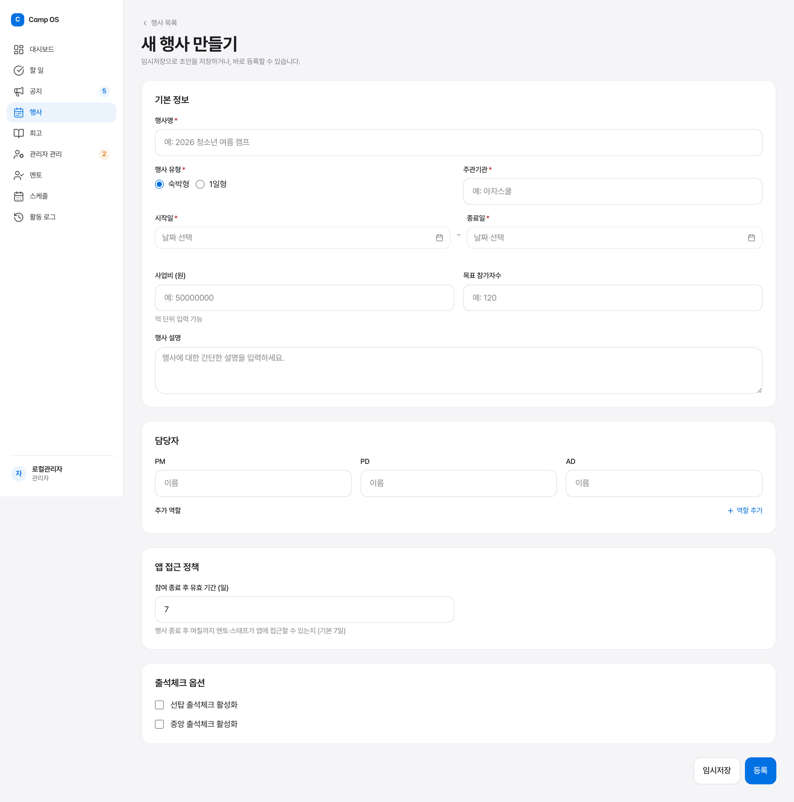
행사명·유형(1일형/숙박형)·주관기관·기간 같은 기본값과, 담당자 3인(PM·PD·AD), 출석 옵션을 정합니다.
역할이 고정된 3인은 정해진 칸으로, 매번 달라지는 기타 인력(촬영·안전요원 등)은 자유 형식으로 받아 — 구조와 유연성을 같이 잡았습니다.
엑셀 명단을 한 번에 올리면 참가자가 등록되고 집결지가 자동으로 만들어집니다. 이 행사 상세 화면이 앞으로 모든 운영의 ‘본부’가 됩니다.
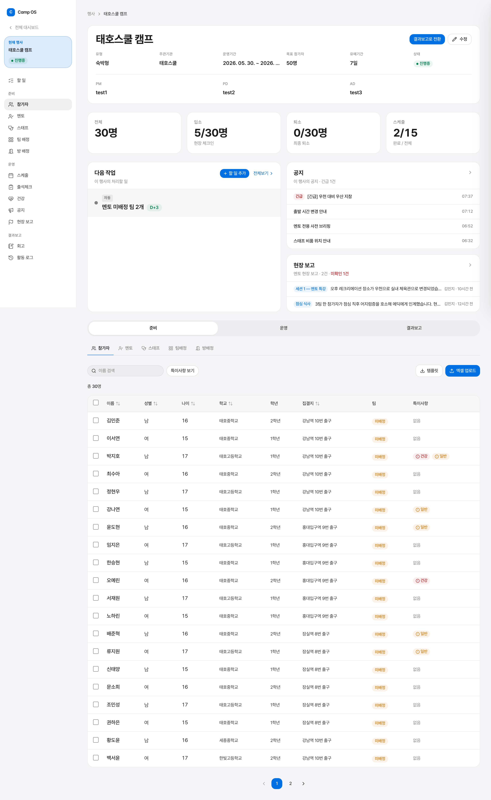
참가자 30명이 등록된 행사 본부. 위쪽 KPI로 인원·출석·스케줄 진행을, 좌측 메뉴로 멘토·스케줄·출석 등 모든 탭을 오갑니다.
엑셀을 ‘원본’으로 두고 시스템이 집결지 목록을 자동 생성합니다. 관리자가 손으로 집결지를 적다 생기는 오타·누락을 없앴습니다.
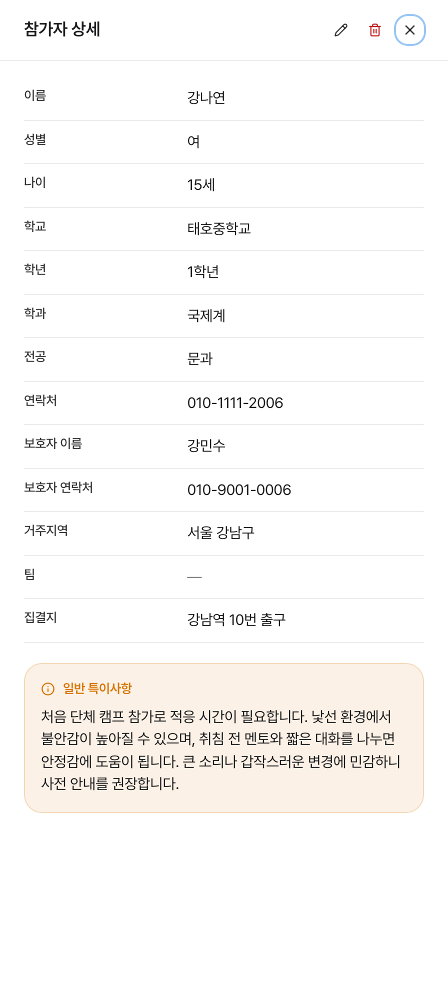
명단에서 참가자를 클릭하면 오른쪽에서 상세 패널이 열립니다. 인적사항·보호자 연락처·집결지, 그리고 특이사항까지 한 화면에 모입니다.
참가자 정보 수정·삭제, 특이사항 확인. 명단에서는 이름 검색, 컬럼 정렬, 여러 명 선택 삭제도 됩니다.
알러지·지병·적응 관련 메모가 여기 쌓입니다. 메딕이 진료할 때도, 멘토가 팀을 챙길 때도 이 정보를 함께 봅니다.
자동으로 균등하게 나눈 뒤, 드래그로 손보고, 팀마다 멘토를 한 명씩 지정합니다.
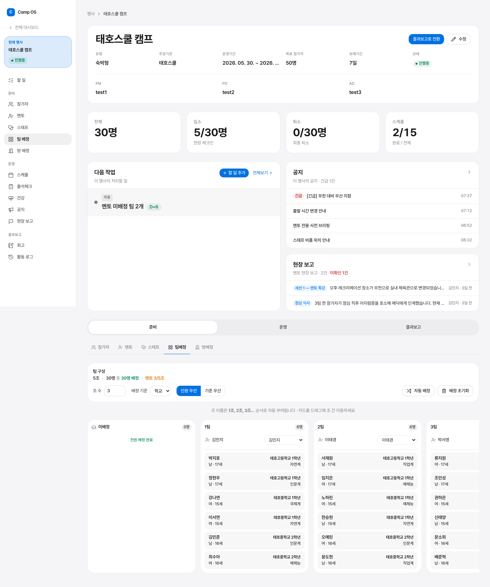
참가자를 팀으로 나누는 화면. 성별·나이·학과 등 기준을 골라 자동 배정하고, 각 팀에 담당 멘토를 붙입니다.
자동으로 대강 만든 뒤 눈으로 다듬는 방식이 현장에서 가장 빠릅니다. 팀당 멘토는 1명 — 이미 멘토가 있는 팀에 다른 멘토를 지정하면, 기존 멘토가 자동으로 미배정으로 빠지며 교체됩니다.
숙박형 행사면 ‘방 배정’ 탭이 생깁니다. 팀 배정과 똑같이 자동 배정 후 드래그로 조정하되, 반드시 같은 성별이 한 방에 들어갑니다.
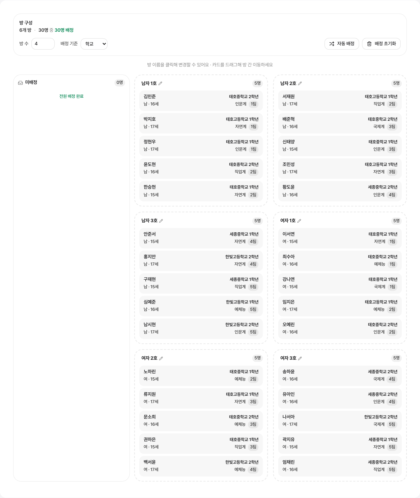
행사 안의 세부 일정(시간표)을 날짜별로 관리합니다. 여기 등록한 스케줄이 멘토 앱에 그대로 나타납니다.
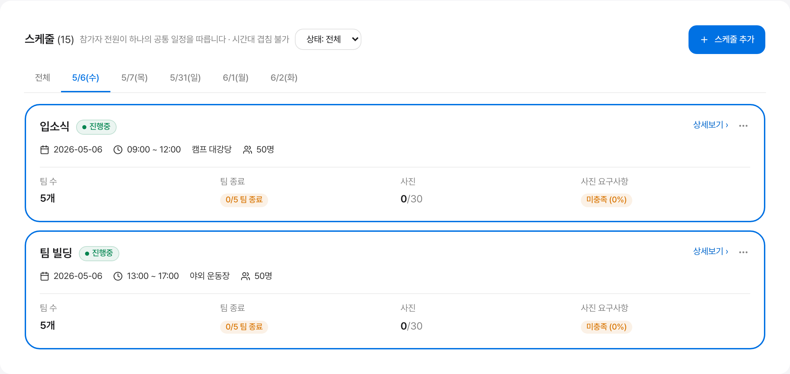
날짜·시간·장소·팀별로 일정을 등록하고 진행 상태(예정/진행중/완료)를 관리합니다. 스케줄마다 사진 업로드를 켤 수 있습니다.
스케줄이 멘토 앱·출석·사진·현장 보고를 잇는 축입니다. 진행 상태가 양쪽 앱에 같이 동기화돼, 따로 맞출 필요가 없습니다.
멘토·메딕이 행사에 들어오는 방법은 두 가지입니다. 하지만 결국 전화번호로 한 사람으로 모입니다 — campOS는 전화번호 자체가 계정이라, 비밀번호가 없습니다.
행사 상세 멘토 탭에서 초대 링크를 발급하고, 들어온 신청자를 승인하거나 반려합니다.
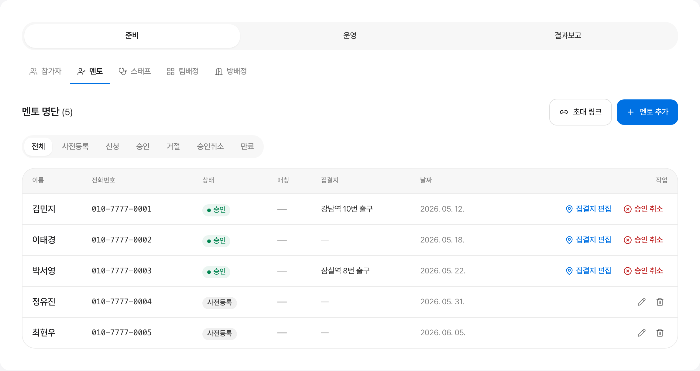
이 행사의 멘토 명단과 상태(사전등록/신청/승인/거절/만료)를 관리합니다. 초대 링크 발급, 집결지 편집, 승인·반려가 여기서 이뤄집니다.
계정은 전화번호 하나로 통합됩니다. 같은 번호면 다른 행사에서도 같은 사람이지만, 행사마다 연결은 따로라 매번 승인이 필요합니다.
메딕도 같은 방식으로 초대하고 승인합니다. 스태프 앱은 하나지만 type으로 역할을 구분합니다.
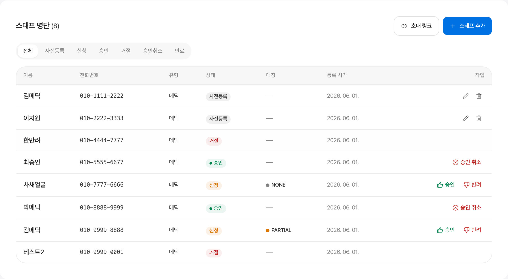
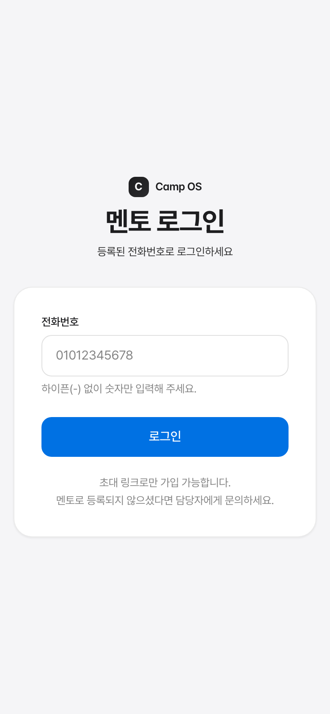
초대 링크를 받은 멘토는 전화번호 인증으로 가입합니다. 한 번 가입한 뒤로는 등록된 번호만 입력하면 바로 로그인됩니다 — 비밀번호가 없습니다.
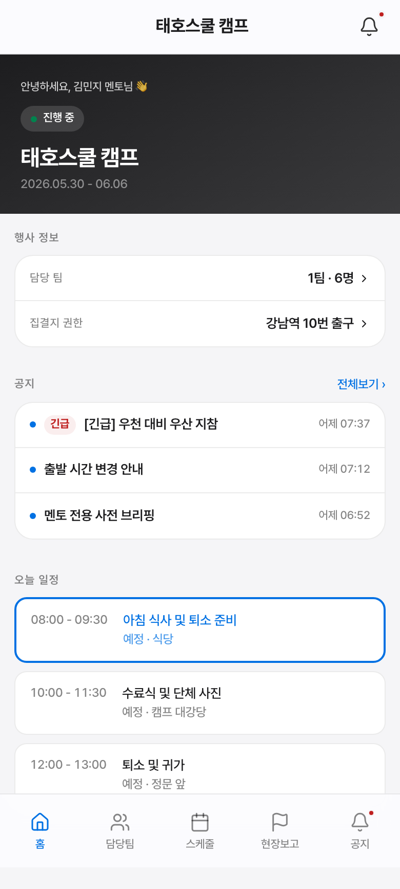
승인되면 담당 팀·오늘 일정·공지가 한 화면에 보입니다. 멘토1은 1팀(6명)을 맡았고, 강남역 10번 출구 집결지 권한도 받았네요.
진행 중 배지 + 행사명·기간, 담당 팀 카드(1팀·6명), 집결지 권한, 최근 공지 3건, 오늘 일정. 아래 탭바로 담당팀·스케줄·현장보고·공지를 오갑니다.
멘토에게는 자기 팀·자기 일정·자기에게 온 공지만 보입니다. 행사 전체를 다루는 관리 기능은 노출되지 않습니다.
이제 두 앱이 함께 움직입니다. 관리자가 공지를 보내면 멘토에게 도착하고, 관리자가 권한을 넘기면 멘토가 출석을 체크합니다. 각 화면을 관리자 → 멘토 순으로 짝지어 보여 드립니다.
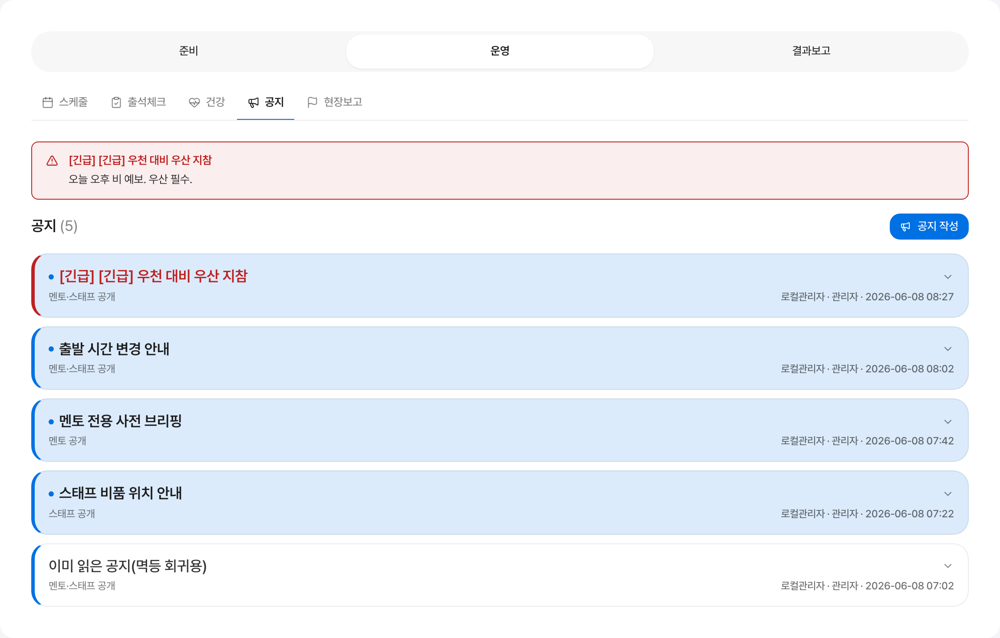
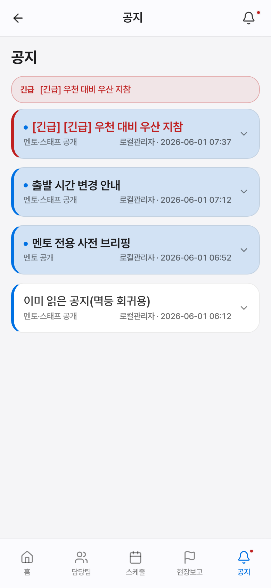
관리자가 대상을 정해 공지를 보내면, 그 대상의 앱에만 도착합니다. 긴급으로 보내면 받는 쪽에서 따로 강조됩니다.
읽음 표시는 멘토 본인이 확인하는 용도입니다. 관리자가 ‘누가 읽었나’까지 추적하진 않습니다 — 꼭 확인이 필요하면 긴급 타입을 씁니다.
출석은 선탑(버스 탑승) → 중앙(행사장 도착) → 종료(해산 전) 세 단계입니다. 이 중 ‘선탑’만 멘토에게 맡길 수 있어요. 중앙·종료는 항상 관리자가 직접 합니다.
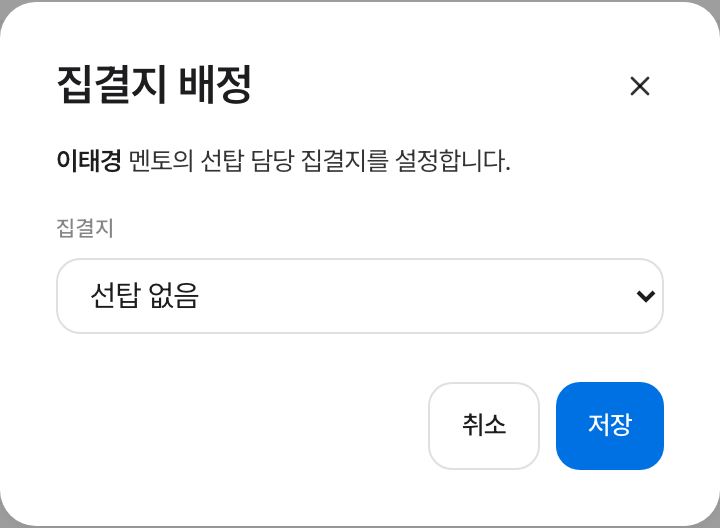
멘토 명단에서 ‘집결지 편집’을 누르면 이 창이 뜹니다. 드롭다운에서 집결지를 하나 고르면, 그 멘토는 그 집결지의 선탑 출석만 체크할 수 있게 됩니다. 다른 집결지나 중앙·종료 단계에는 손댈 수 없어요. — 권한을 ‘집결지 × 선탑 단계’로 잘게 끊어 두는 거죠.
실제 화면으로 보면 — 관리자는 단계별 출석부에서 집결지별 진행을 지켜보고, 권한 받은 멘토는 자기 집결지 명단만 체크합니다.
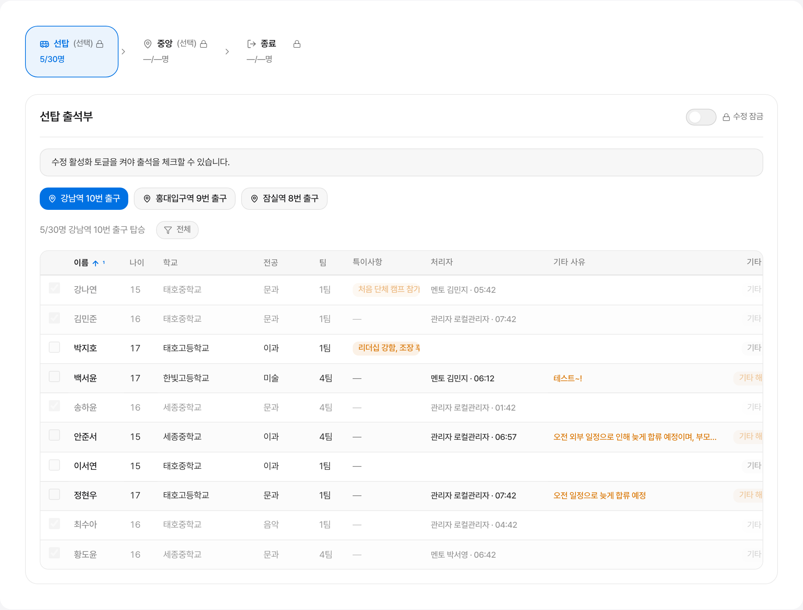
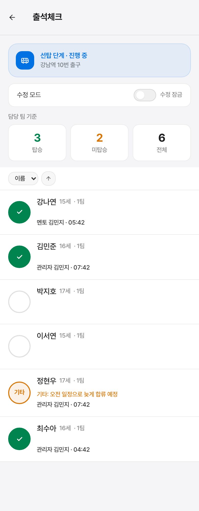
출석은 선탑(버스 탑승) → 중앙(행사장 도착) → 종료(해산 전) 3단계입니다. 관리자가 집결지별로 멘토에게 ‘선탑’ 단계만 맡길 수 있고, 중앙·종료는 관리자가 직접 합니다.
한 집결지에 관리자가 없을 때 담당 멘토가 대신 체크합니다. 권한은 ‘이 집결지의 선탑 단계’로만 한정돼, 멘토가 다른 집결지나 종료 출석엔 손대지 못합니다.
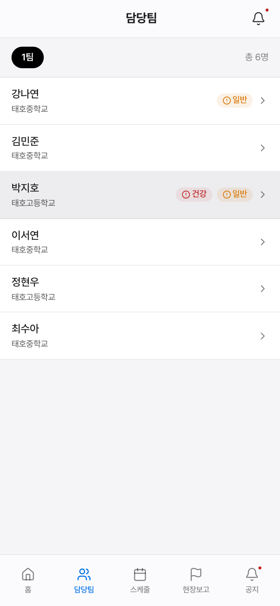
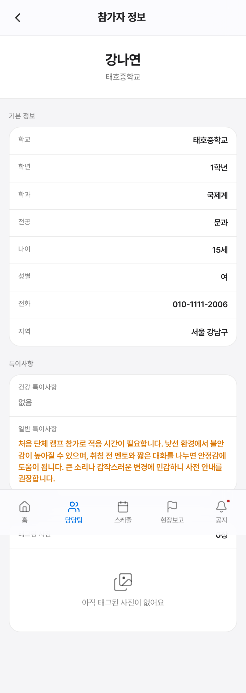
왼쪽은 우리 팀 참가자 명단, 오른쪽은 참가자를 누르면 뜨는 상세입니다. 인적사항과 함께 건강·일반 특이사항을 현장에서 바로 확인합니다.
관리자가 엑셀에 적은 특이사항이 멘토에게도 그대로 보입니다. 현장에서 더 챙겨야 할 참가자를 멘토가 미리 알 수 있게요.
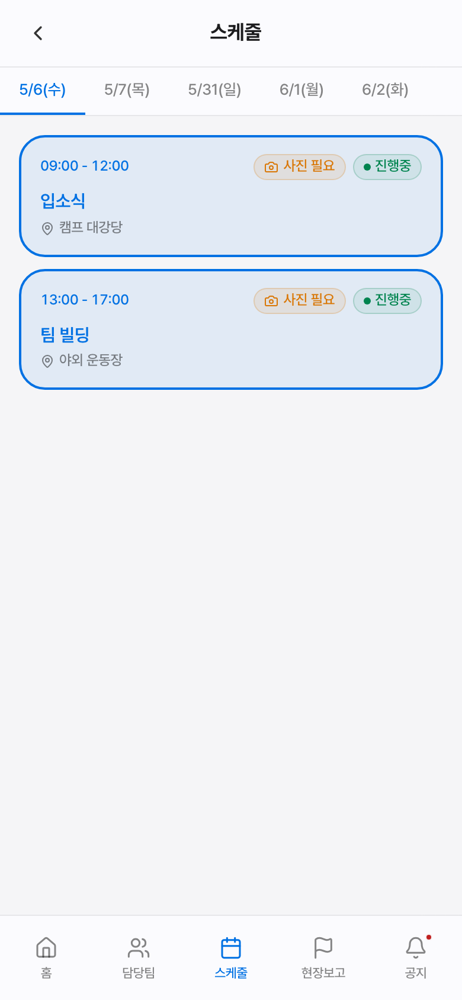
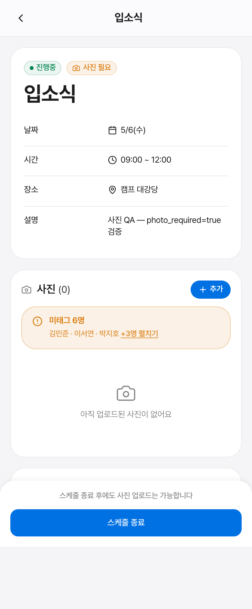
관리자가 등록한 스케줄이 멘토 앱에 그대로 보입니다(왼쪽). 사진이 필요한 일정에는 ‘사진 필요’ 표시와 함께 태그 진행률(예: 사진 3/9)이 카드에 떠, 어느 일정이 덜 채워졌는지 목록에서 바로 보입니다. 스케줄에 들어가면(오른쪽) 사진을 올리고, 그 자리에서 찍힌 참가자를 태그합니다.
스케줄 상세에는 사진 그리드, 미태그 인원 집계, ‘스케줄 종료’ 버튼이 있습니다. (예시는 사진을 올리기 전이라 비어 있고 ‘미태그 6명’으로 떠 있어요.)
현장에서 제일 자주 하는 일이 사진입니다. ‘참가자를 먼저 고르고 찍기’가 아니라 ‘사진을 먼저 올리고 거기서 태그하기’ 흐름에 맞췄습니다.
한 스케줄에는 여러 팀이 함께 참여합니다. 각 팀 멘토가 자기 팀 일정을 끝내면, 모든 팀이 끝났을 때 시스템이 그 스케줄을 자동으로 ‘완료’로 닫습니다.
일정이 끝났는지 가장 먼저 아는 사람은 현장의 팀 멘토입니다. 그래서 멘토가 자기 팀을 닫고, 시스템이 합산해 스케줄 전체를 마감합니다.
관리자는 ‘각 팀이 종료를 눌렀는지’만 지켜보면 됩니다. 실수로 닫혔다면 관리자가 되돌릴 수 있고, 모든 스케줄이 닫히면 마무리 단계의 ‘결과보고 시작’ 버튼이 열립니다.
이번엔 방향이 반대입니다. 멘토1이 올린 현장 보고와 메딕1이 적은 진료 기록이 관리자1 화면에 실시간으로 누적되고, 관리자는 그걸 확인하고 답합니다. 멘토·메딕 → 관리자 순으로 봅니다.
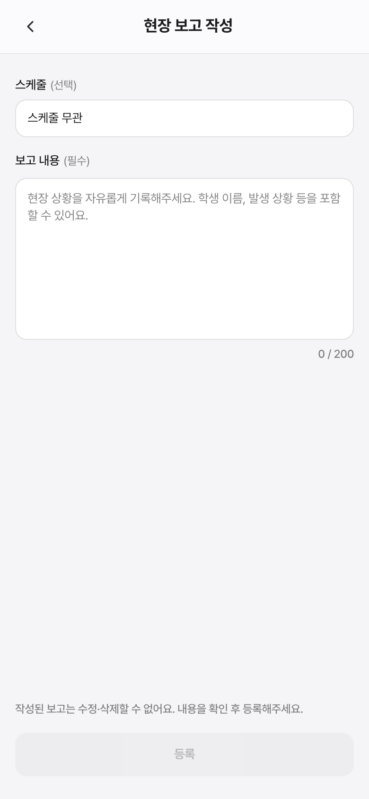
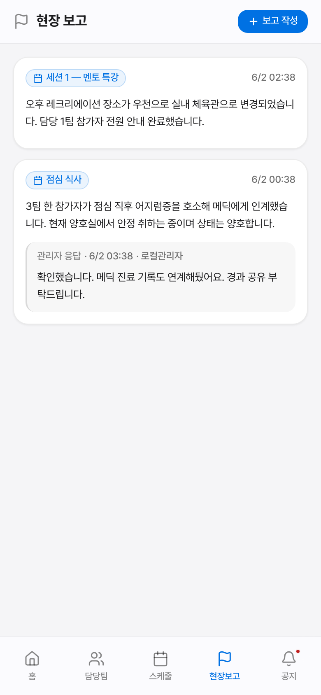
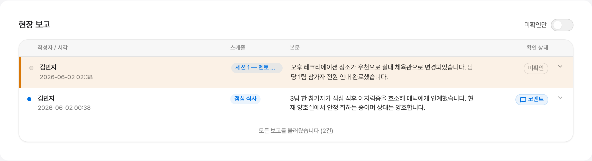
멘토가 현장 상황을 글로 올리면(스케줄·작성 시각·작성자 자동 기록), 관리자가 확인하고 코멘트를 답니다. 그 답이 멘토 앱에 ‘관리자 응답’으로 다시 표시됩니다.
별도의 ‘이슈’ 기능을 만들지 않았습니다. 자유롭게 쓰고, 시간순으로 쌓이고, 관리자가 확인하는 단순한 흐름으로 정리했습니다.
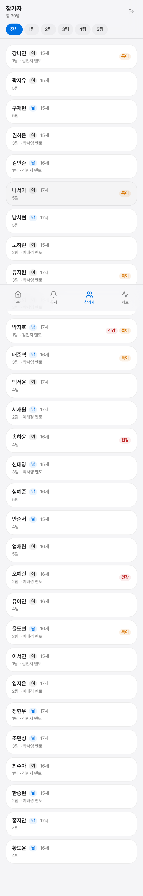
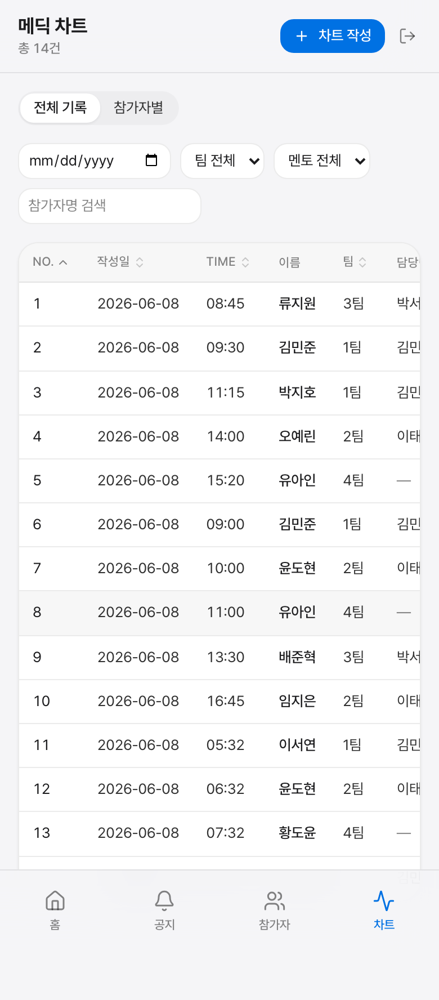
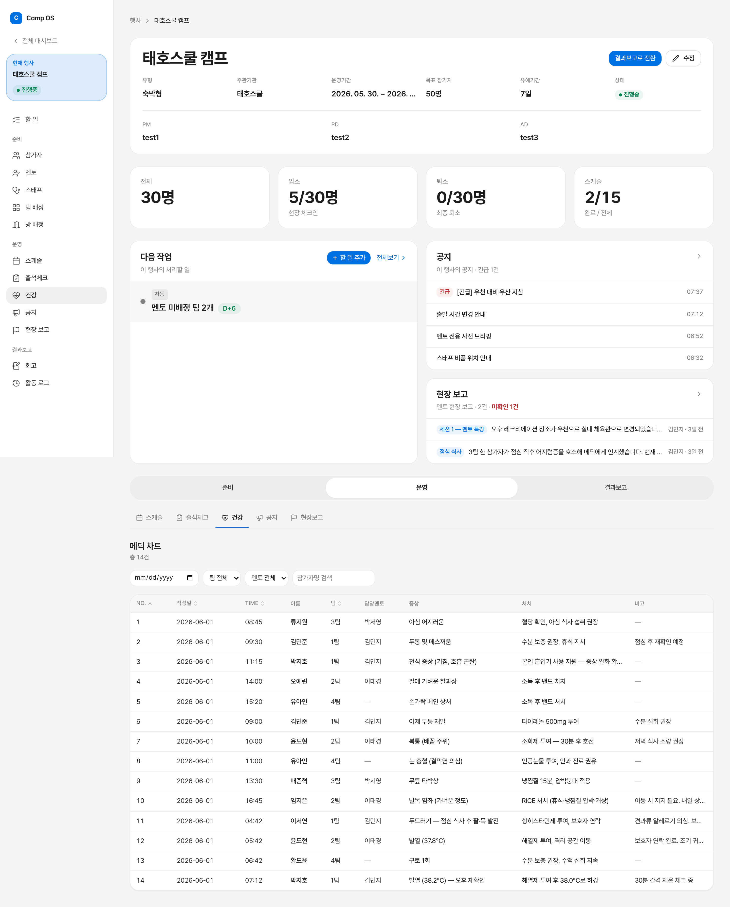
메딕이 참가자별 진료 내역을 글로 남기면(작성 시각·작성 메딕 자동), 관리자는 건강 탭에서 누적된 기록을 봅니다.
한 행사에 메딕 인원 제한이 없습니다. 여러 메딕이 함께 기록할 수 있고, 각 기록에는 누가 썼는지가 자동으로 표시됩니다.
행사는 만들어진 순간부터 닫힐 때까지 정해진 상태를 거칩니다. 처음 보면 헷갈리기 쉬우니, 먼저 전체 상태 흐름부터 보겠습니다.
행사 상세의 ‘다음 작업’ 위젯이 마무리까지 무엇이 남았는지 짚어 줍니다.
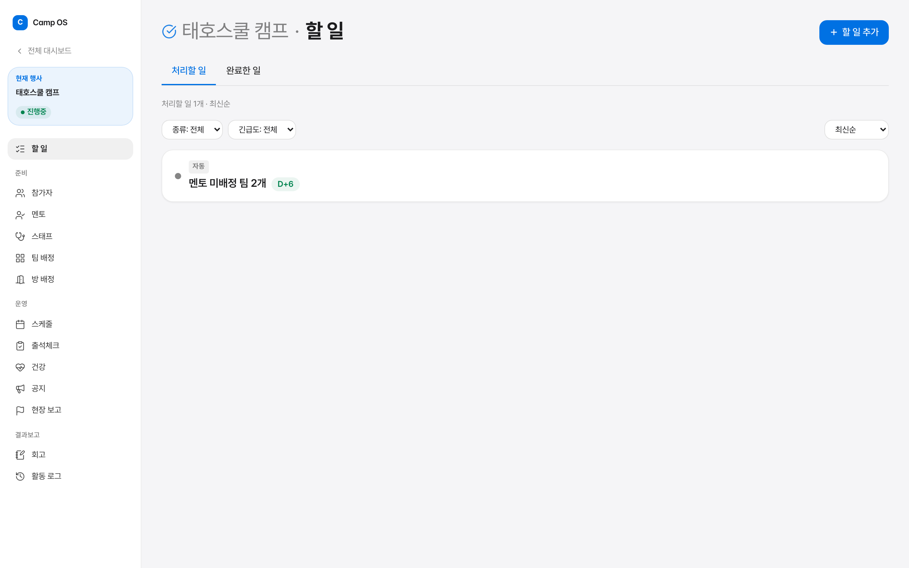
회고는 두 군데서 만납니다. 행사별로는 진행 중 느낀 점을 카테고리(이슈/개선점/잘된 점/메모)로 그때그때 적고 — 이 화면처럼 전체 회고 페이지에서는 여러 행사에 쌓인 회고를 한곳에 모아 봅니다.
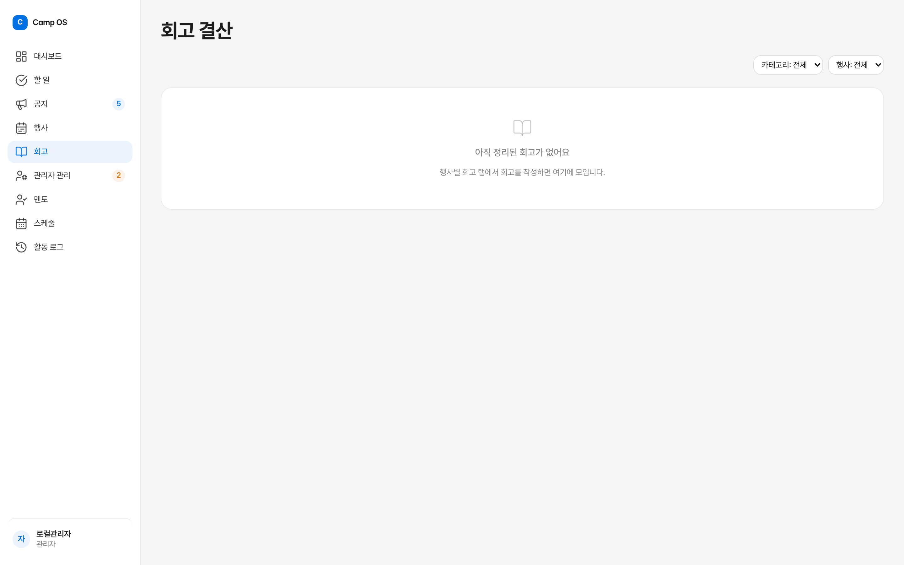
누가 언제 무엇을 했는지가 감사 기록으로 남습니다. 자동 상태 전환, 멘토 출석, 공지 발송까지 모두 누적됩니다.
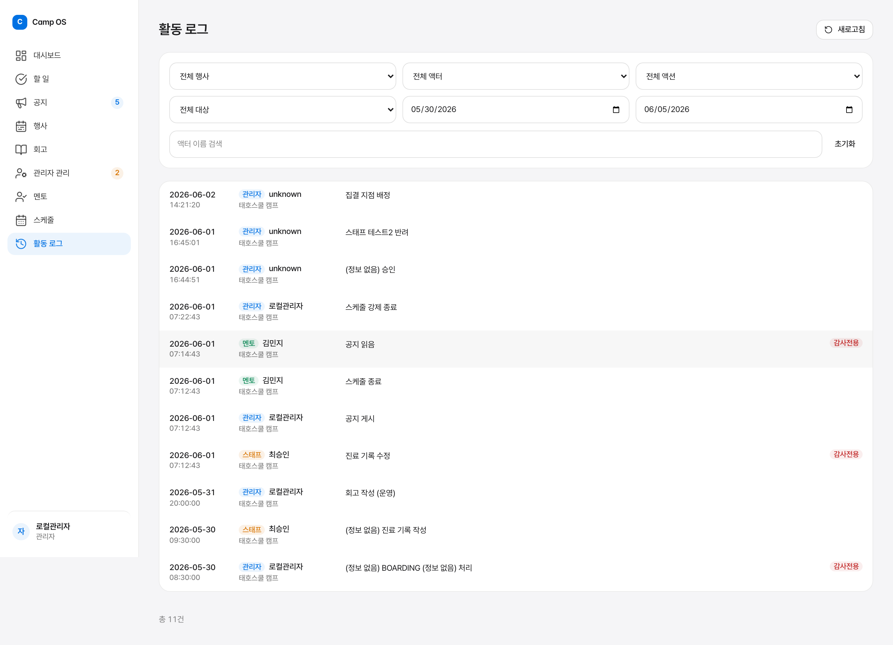
행사·참가자·멘토·스케줄·공지 등 주요 행위를 시각·주체와 함께 기록합니다. 시스템이 자동으로 한 일도 따로 표시됩니다.
‘누가 눌렀는지’를 항상 되짚을 수 있어, 여러 명이 함께 운영해도 책임과 이력이 분명하게 남습니다.